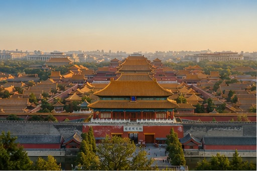
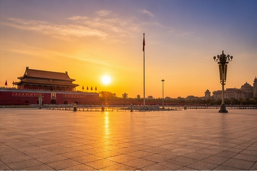
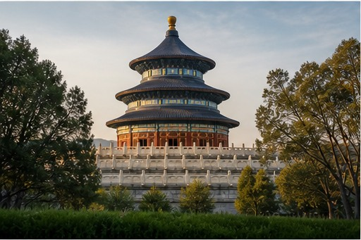
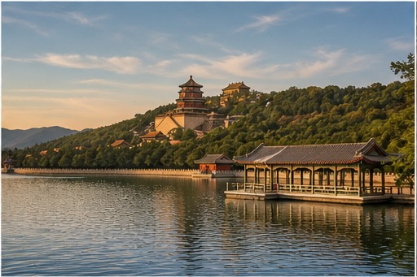
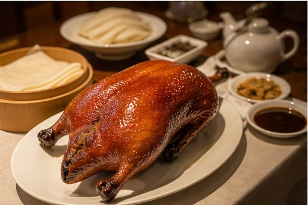

01
Forbidden City
Palaces, courtyards, and the clearest introduction to imperial China.
China's imperial capital
China’s capital brings more than three thousand years of urban history into one immense modern city. Red walls, golden roofs, ceremonial avenues, intimate hutongs, and new skylines coexist, giving first-time visitors a direct view into both China’s imperial past and its present-day rhythm.
The Forbidden City, the Great Wall, neighborhood food, and daily life inside the old lanes make Beijing one of the country’s essential first stops. Distances are large and major sights reward advance planning, but a well-paced route turns the scale of the city into part of the experience rather than a burden.
01
Start here

Palaces, courtyards, and the clearest introduction to imperial China.
Walk a mountain section at Mutianyu or another carefully chosen gateway.

A monumental civic space at the symbolic center of Beijing.

Ceremonial architecture set inside a lively local park.

Lakeside pavilions and royal gardens beyond the city center.

Old lanes, courtyard homes, and a more human scale of city life.
02
Eat like a local

03
Recommended time
Enough time for the imperial core, one Great Wall day, and a slower look at local neighborhoods.
Get ItineraryCover the Forbidden City, Temple of Heaven, a Great Wall day, and one hutong neighborhood without rushing every stop.
Add the Summer Palace, a museum, and a better local food route with more realistic transfer time.
Go deeper into a quieter Great Wall section or add contemporary art and modern Beijing.
Your Beijing, made clearer
Tell us your dates, interests, and preferred pace. We’ll help make Beijing’s scale feel clear before you arrive.
Start With Your Beijing Trip